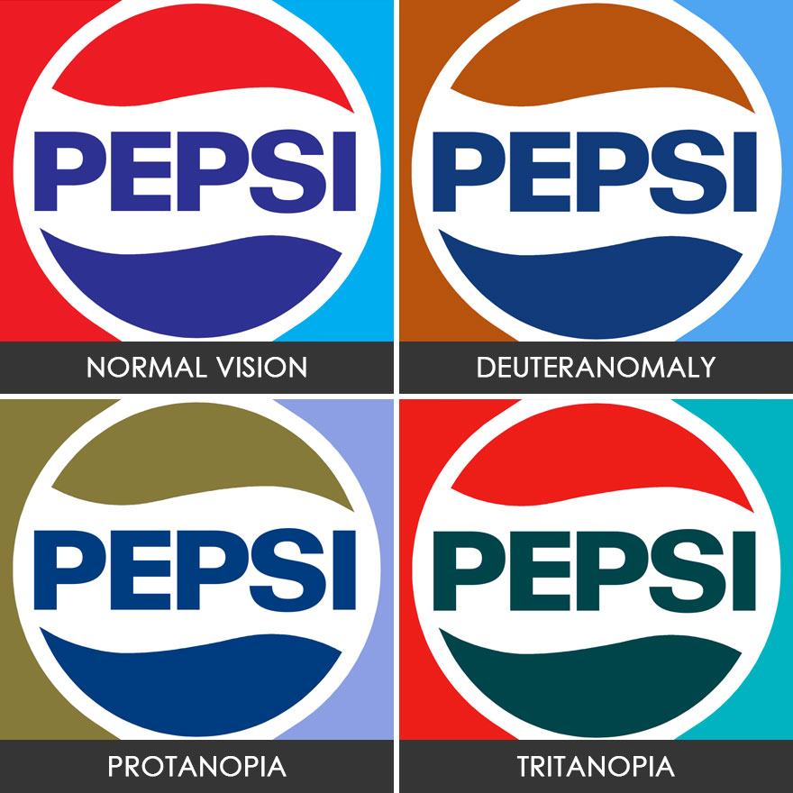
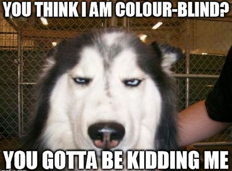

Interesting facts
1. Color blindness is more prevalent among males than females, because the most common form of color vision deficiency is encoded on the X sex chromosome.
2. Dogs are not colorblind.
3. If a woman is red-green colorblind, all her sons will also be colorblind.

4. John Dalton was also colorblind himself.